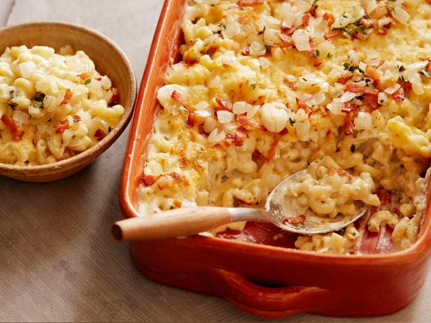

Bacon Mac & Cheese!

Description
Creamy, sexy, empowering. This Bacon Mac will completely satisfy the whole party.
Ingredients
- General Purpose Flour (1 tbs)
- Butter (1 tbs)
- Whole Milk (1 cup)
- Cheese (2 cup)
- Macaroni (1 box)
- Bacon (5 strips)
- Ritz Crackers (half a sleeve or to taste)
Steps
- Cook Pasta according to box until just under al dente
- Prepare roux: Thoroughly mix flour and butter over medium heat
- Make Beschamel by steadily stirring in milk until sauce no longer coats the pan
- Make Cheese Sauce by adding shredded cheese to the Beschamel until desired consistency is reached
- Mix drained pasta with the Cheese Sauce, reserving a portion of the sauce
- Create an even layer of pasta on the bottom of the baking dish using half of the pasta
- Cover with a layer of the reserved cheese sauce
- Cover with remaining pasta, followed by another layer of cheese sauce
- Crush Ritz crackers in a plastic bag and mix with bits of bacon
- Top the dish with the crust/bacon mix
- Broil dish until topping is the desired color and crispness